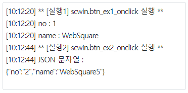

JSON 문자열을 JSON 객체로 생성, JSON 객체를 문자열로 반환받는 예제입니다.
JSON 문자열을 JSON 객체로 생성하기
JSON 객체를 문자열로 반환받기
이 예제는 예제 화면의 영역 [로그 확인]의 textarea에 참고용 로그를 출력하고 있습니다.
그림 1.로그 출력 영역 참고 이미지

1. 버튼 실행1을 클릭합니다.
2. 로그 출력 영역에 로그를 확인합니다.
[로그 예시]
** [실행1] scwin.btn_ex1_onclick 실행 **
no : 1
name : WebSquare
--------------------------------------
1. 버튼 실행2를 클릭합니다.
2. 로그 출력 영역에 로그를 확인합니다.
[로그 예시]
** [실행2] scwin.btn_ex2_onclick 실행 **
JSON 문자열 : {"no":"2","name":"WebSquare5"}
--------------------------------------
var jsonStr; var jsonObj; jsonStr = '{"no":"1", "name":"WebSquare"}'; //json 문자열 jsonObj = JSON.parse( jsonStr ); //json 객체 생성
var jsonObj; var jsonStr; jsonObj = { "no":"2", "name":"WebSquare5" }; jsonStr = JSON.stringify( jsonObj );